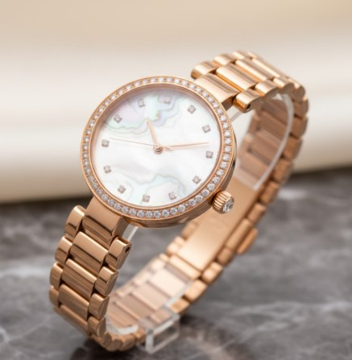
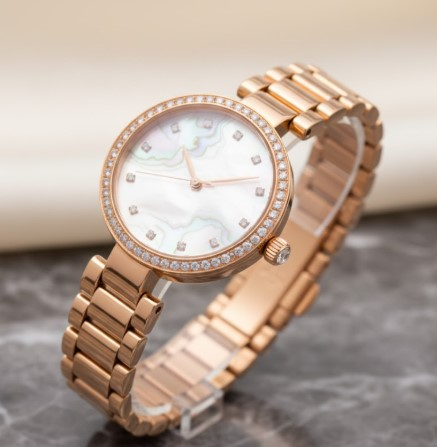

Anillo "Eternidad Solitaria"
Un diseño sobrio y moderno con un diamante de corte brillante en montura solitaria.
Materiales
- Metal: Aleación de platino 950 o acero quirúrgico pulido espejo, resistente al desgaste y la oxidación.
- Piedra principal: Zirconia cúbica premium de 1 quilate (simula un diamante con gran brillo y pureza).
- Montura: Estilo solitario de cuatro garras finas, que permite máxima entrada de luz para realzar el destello.
- Acabado: Pulido de alto brillo con textura suave al tacto, libre de níquel e hipoalergénico.
Descripción
El “Eternidad Solitaria” representa la esencia del amor atemporal en su forma más pura. Su diseño minimalista resalta la belleza de la piedra central, evocando pureza y compromiso sin exceso. Fabricado con materiales duraderos y de alta calidad, es ideal tanto para uso diario como para ocasiones especiales. Su brillo limpio y su perfil elegante lo convierten en un clásico moderno dentro de la joyería contemporánea.
$120


 
